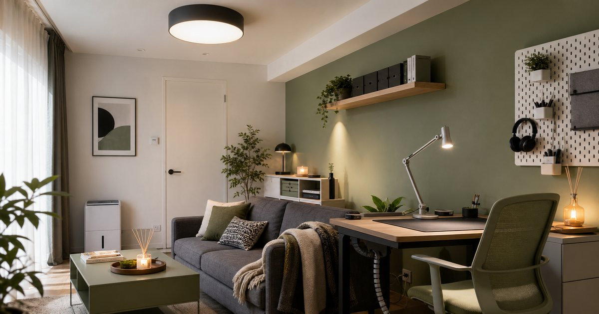

客廳與工作角落的照明改造：吸頂燈、桌面燈、香氛與收納
客廳和工作角落常常共用同一個空間。用吸頂燈、桌面燈、收納與氣味分層，能讓同一個房間在工作與休息之間更好切換。

先決定客廳裡有哪些任務
照明改造之前，要先問客廳實際承擔哪些任務：休息、吃飯、閱讀、視訊會議、孩子寫作業、簡單運動，還是每天晚上處理工作訊息。任務不同，需要的光線和收納也不同。
燈后適合處理 LED、吸頂燈與主要照明；灰調可補足燈飾、花器、香氛與家飾語彙；SENGLI 則可放在質感小家電與生活選物的脈絡裡。若工作角落使用時間長，職人椅YA、完美主義與 Hysure 也能分別補上座椅、收納與環境電器的選擇。
編輯部會把客廳視為可切換的場景，而不是單一房間。白天或晚上、工作或休息、獨處或有人來訪，對光線和桌面整潔的要求都不一樣。
- 休息需要柔和背景光。
- 工作需要穩定桌面光。
- 會議需要臉部光線與背後整潔。
吸頂燈負責基礎亮度，不應負責所有氣氛
吸頂燈是客廳的基礎光源，但若所有情境都只靠它，就會太單一。工作時可能不夠聚焦，休息時又太亮。燈后與灰調的照明選項，可以用來區分主光、桌面光和角落光。
選吸頂燈時，要先看空間大小、天花板高度、色溫與是否容易維修。若是租屋或不想動工程，可以先補桌燈或立燈，不必急著更換主燈。照明改造最重要的是分層，不是一次把燈具買滿。
若客廳同時作為工作角落，主燈最好只負責均勻照明，細節交給桌燈。這樣工作結束後，只要關掉桌面光，就能讓空間回到休息狀態。
- 主燈負責安全與基礎亮度。
- 桌燈負責工作與閱讀。
- 角落燈負責休息和空間深度。
工作桌要有自己的光和收納，不要完全借用客廳
把筆電放在客廳桌上就開始工作，短期可以，長期很容易把休息區變成雜物區。工作角落至少需要自己的桌面光、插座區、文件暫放區和線材整理。
完美主義可處理桌邊層架、櫃體與收納；職人椅YA可作為長時間坐姿的座椅選項，但文章不會把任何椅子寫成改善腰背問題。重點是讓工作用品有邊界，工作結束後能收回去。
如果你常在客廳開視訊會議，桌面光也要考慮臉部陰影。把燈放在側前方，通常比只靠頭頂光更自然，也比較不會讓背景顯得雜亂。
- 桌面光要避免直射眼睛或螢幕反光。
- 線材、文件和杯具要有固定位置。
空氣與濕度會影響工作角落的使用感
客廳工作角落常常靠近窗邊、陽台或沙發，濕氣、悶熱、灰塵和氣味都會影響停留感。Hysure 這類除濕或空氣環境相關小家電，可以放在居家環境維持的角度評估；SENGLI 的小家電與生活選物則可作為補充。
不過空氣電器不能替代通風與清潔。若桌面堆滿紙張、布料和雜物，再多電器也很難讓角落舒服。先保持通風和清潔，再評估是否需要除濕、循環或其他設備，會更穩。
環境電器也要考慮噪音和擺放位置。若設備讓會議收音變差，或佔掉走道與插座，它解決一個問題的同時，也可能製造另一個問題。
- 潮濕空間先看通風和除濕需求。
- 電器規格要依坪數與使用位置評估。
香氛和家飾負責切換狀態，不負責掩蓋雜亂
工作結束後，很多人會希望空間立刻回到休息感。au fait 無非、灰調或 THANN 這類香氛與家飾選項，可以作為狀態切換的小提示，但前提是桌面已經有收納流程。
如果文件、充電線和杯子還散在客廳，香氛只會變成漂亮但無力的小物。比較好的方式，是工作結束先把桌面清到固定範圍，再開一盞低光源或使用淡香調，讓空間從功能切回生活。
香氛和家飾適合少量、固定、好清潔。小物太多會增加擦拭和整理成本，最後讓工作角落更難維持。
- 香氛放在收納之後，不要用來掩蓋雜亂。
- 家飾小物要少而固定，避免增加擦拭與整理負擔。
最實用的改造順序：桌面光、線材、座位，再到氣氛
如果只想先做一輪小改造，建議順序是桌面光、線材收納、座位舒適度，再到香氛與家飾。這樣能先改善每天會碰到的摩擦，再補空間情緒。
客廳與工作角落的改造，不是把家變成辦公室，也不是把工作用品全部藏起來，而是讓同一個空間在不同時間有不同表情。當光線和物品邊界清楚，工作與休息都會比較不互相干擾。
購買前可以先拍一張工作時的客廳照片，再拍一張休息時的照片。兩張照片中都讓你覺得礙眼的地方，就是第一個該處理的位置。
- 先讓桌面能工作，再讓角落好看。
- 每天都會用到的功能，優先級高於偶爾拍照好看的小物。
FAQ
客廳工作角落需要更換吸頂燈嗎？
不一定。若租屋或預算有限，可先用桌燈、立燈或可移動光源補足工作與閱讀區，再評估主燈是否真的需要更換。
除濕機或空氣相關小家電要怎麼選？
先看坪數、濕度來源、使用位置與商品規格。這類設備應搭配通風與清潔，不應被視為解決所有空氣或潮濕問題的單一方法。
客廳放香氛會不會干擾工作？
可能會。若你對氣味敏感，工作時應選淡香或不使用香氛，等工作結束後再作為狀態切換。香氛不應過濃，也要考慮同住者感受。
下一步建議
如果你的客廳同時也是工作角落，先補桌面光與線材收納，再決定是否需要主燈、小家電或香氛。
重要警語
本文為一般居家照明、收納與生活電器選購情境整理，不構成裝修、安全、健康或空氣品質改善保證。燈具、電器與家具需依空間條件、電力配置、商品規格與安全標示評估；價格、活動與庫存請以商品頁公告為準。
本文含品牌／商品導購連結；若你透過部分商品連結前往選購，Elite Fashion 可能取得合作收益。本文仍以編輯判斷與使用情境整理為主，價格、規格、活動與庫存請以商品頁公告為準。